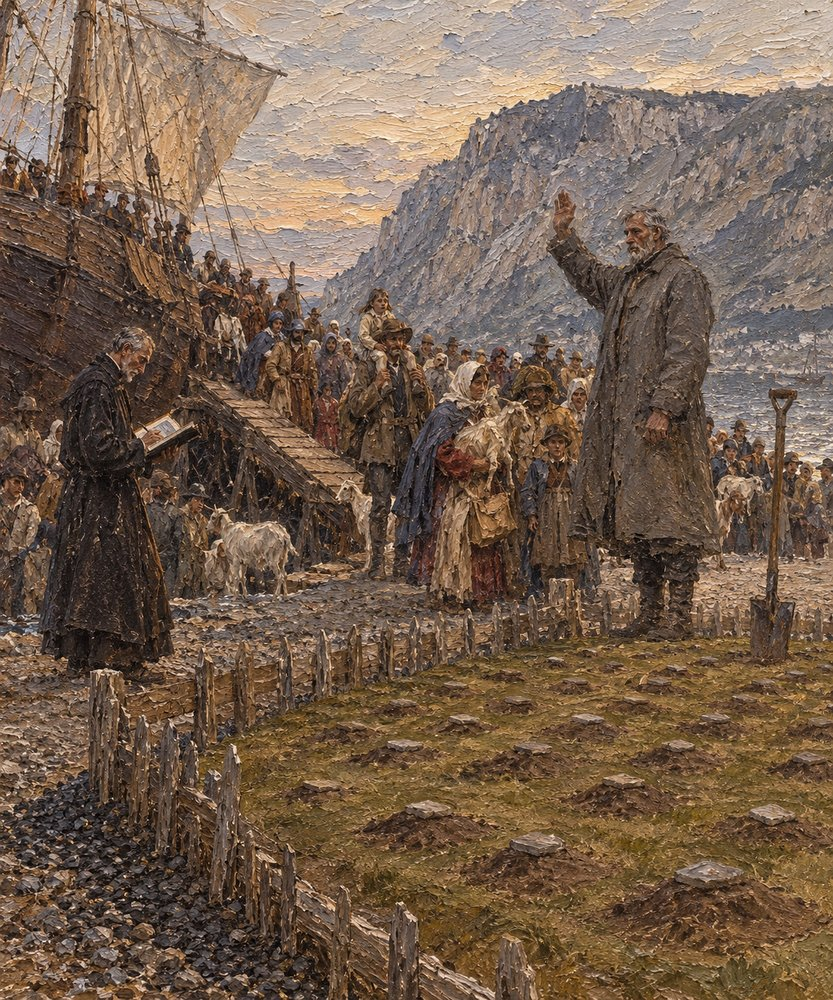

Record 4 of 15
Wayfarers
On the ninth evening of the river, the first thing the settlers see of Val Muta is a graveyard: a low fence of split stakes, sixty-odd mounds, each marked with a flat river-stone, and at the far end a shovel planted upright in the ground. Ubaldo beside it lifts his hand, slowly, and waves. The goats come off the boats in a clattering, aggrieved flood, the boatmen carry the children ashore, and Ottone, at the foot of the first gangplank, writes each family in a single line apiece.
A quay below a mountain: a ship with a gangway discharges families, goats and a child on a man's shoulders; at the left a clerk in a black robe writes in a book, an old bearded man in a grey coat raises one arm beside a shovel standing in the ground, and behind a fence lies a field of low graves, each marked with a white stone..